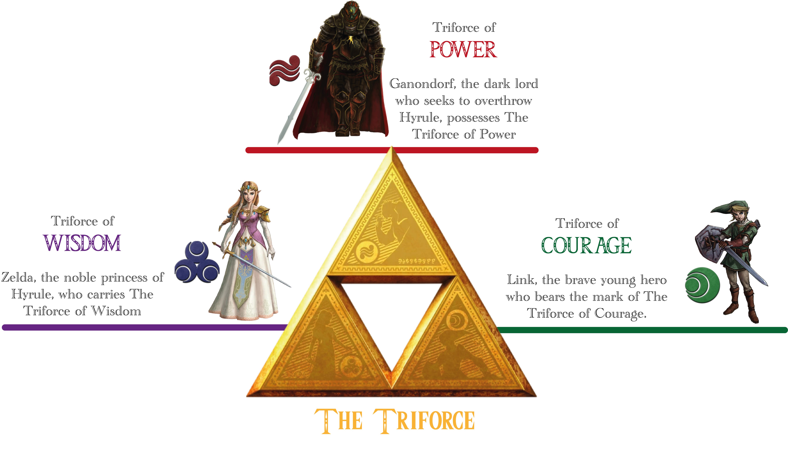
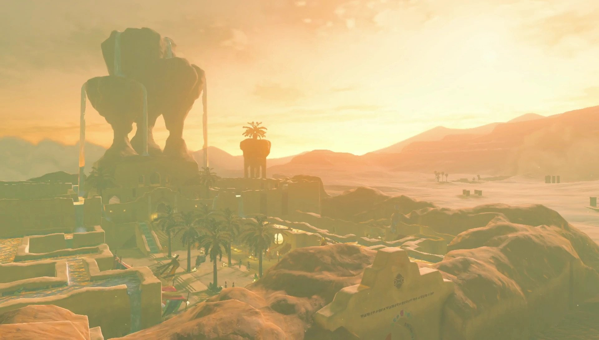
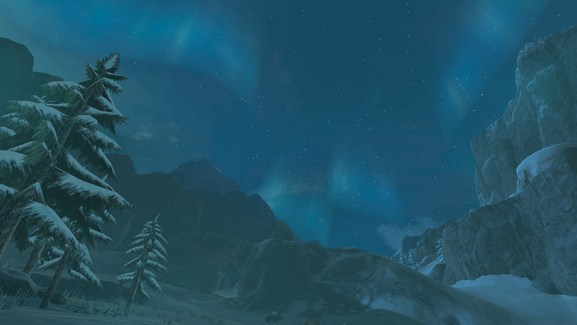

.jpg)
The Hyrule Region
Description
Central Hyrule is the central Region of Hyrule Kingdom, containing the Great Plateau, Hyrule Field and the Hyrule Ridge. Central Hyrule was burned in the Great Calamity a hundred years ago.[3] Link begins his quest in this Region after waking up in the Shrine of Resurrection on the Great Plateau. At the northern edge of Central Hyrule lies Hyrule Castle, which holds Calamity Ganon.
It is known, during the time of Calamity Ganon, as one of the most dangerous Regions in Hyrule Kingdom, due to vast amounts of Guardians being present there and myriad monsters, such as Bokoblins.

The Gerudo Region
Description
The Gerudo Region is located in the southwest of Hyrule and has both a massive desert and rocky mountains. The difference between the Gerudo Desert's scorching-hot days and frigid nights is extreme, but hearty Molduga monsters, sand seals, and Voltfruit-bearing cacti thrive in spite of the tremendous temperature swings. There are oases in the desert as well, and the Gerudo have built their own city in the center of the desert around the largest one. Isolated by Gerudo Canyon and the Gerudo Desert, the culture of the Gerudo developed separately from the rest of Hyrule and is unique for that reason.

The Hebra Region
Description
The Hebra province is located in northwest Hyrule. It is geographically isolated from the neighboring Central Hyrule by the enormous Tanagar Canyon, which cuts between the two areas from northeast to southwest and creates their shared border. The Tabantha Frontier in the southern tip of the region is a land of little grass, few trees, and exposed rock, while to the north are the Hebra Mountains - a frigid range with high elevation and low temperatures. Rito Village is located in Hebra, but that is the only large settlement in a region of few inhabitants and fewer travelers.
.jpg)
The Eldin Region
Description
The Eldin Region is located in the northeast of Hyrule. This scorched terrain extends out from its volcano Death Mountain center. It is so hot that simply placing objects on the ground is enough for them to burst into flame. If a non-Goron is going to explore this place, preparation is required. Following Eldin Canyon will lead one into Goron City, home of the Gorons. Along the way is the Southern Mine, where members of the Goron Group Mining Company are excavating ore.